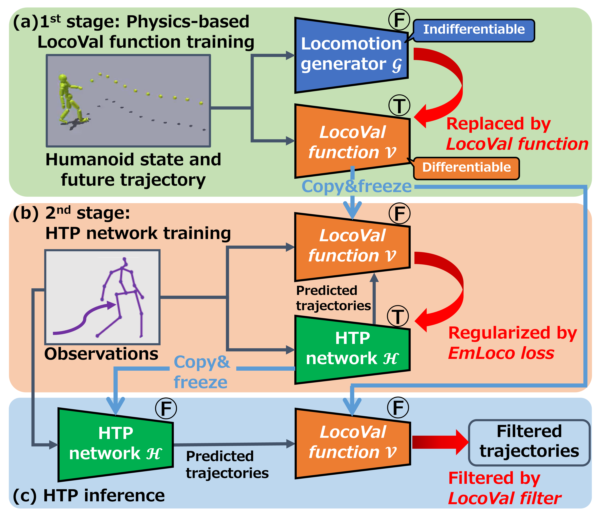

Humans can predict future human trajectories even from momentary observations by using human pose-related cues. However, previous Human Trajectory Prediction (HTP) methods leverage the pose cues implicitly, resulting in implausible predictions. To address this, we propose Locomotion Embodiment, a framework that explicitly evaluates the physical plausibility of the predicted trajectory by locomotion generation under the laws of physics. While the plausibility of locomotion is learned with an indifferentiable physics simulator, it is replaced by our differentiable Locomotion Value function to train an HTP network in a data-driven manner. In particular, our proposed Embodied Locomotion loss is beneficial for efficiently training a stochastic HTP network using multiple heads. Furthermore, the Locomotion Value filter is proposed to filter out implausible trajectories at inference. Experiments demonstrate that our method enhances even the state-of-the-art HTP methods across diverse datasets and problem settings.



@InProceedings{EmLoco_CVPR25,
author = {Taketsugu, Hiromu and Oba, Takeru and Maeda, Takahiro and Nobuhara, Shohei and Ukita, Norimichi},
title = {Physical Plausibility-aware Trajectory Prediction via Locomotion Embodiment},
booktitle = {IEEE/CVF Conference on Computer Vision and Pattern Recognition (CVPR)},
year = {2025}
}